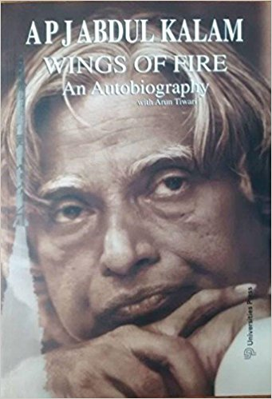

The Alchemist
Paulo Coelho
Description
Paulo Coelho's enchanting novel has inspired a devoted following around the world. This story, dazzling in its powerful simplicity and inspiring wisdom, is about an Andalusian shepherd boy named Santiago who travels from his homeland in Spain to the Egyptian desert in search of a treasure buried in the Pyramids.
Click here to Buy

Wings of Fire:An Autobiography of Abdul Kalam
Arun Tiwari
Description
Every common man who by his sheer grit and hard work achieves success should share his story with the rest for they may find inspiration and strength to go on, in his story. The 'Wings of Fire' is one such autobiography by visionary scientist Dr. APJ Abdul Kalam, who from very humble beginnings rose to be the President of India. The book is full of insights, personal moments and life experiences of Dr. Kalam. It gives us an understanding on his journey of success.
Click here to Buy
Half Girlfriend
Chetan Bhagat
Description
Half Girlfriend is a story of Bihari boy Madhav, a Hindi speaking Bihari who falls in love with Riya, an influential Delhi girl on the campus of prestigious St. Stephen’s College. Madhav belongs to middle class family, while Riya is from higher class and both have different lifestyles. Madhav proposes her, but Riya rejects the proposal because she thinks they are good as a friend only.
A romance novel for the young adults, Half Girlfriend is a story that has been set in different locations including Bihar, Delhi and New York; it revolves around a boy who comes from Bihar in India and his deep longing to dazzle out the girl he is in love with.
According to the author, the book is meant for the "non-English-types" and reveals the utter dissatisfaction and language problems a young man from Bihar, who speaks Bhojpuri and knows little about the ways of big cities, had to wade through as he got admitted at St. Stephen’s College in the national capital, a place that signified sophistication. He falls for a rich, smart and high-class girl from the city. Although the girl never fully accepts this relationship, she nevertheless gives a nod to be his "half girlfriend".
Click here to Buy
The Monk Who Sold His Ferrari
Robin Sharma
Description
A renowned inspirational fiction, The Monk Who Sold His Ferrari is a revealing story that offers the readers a simple yet profound way to live life. The plot of this story revolves around Julian Mantle, a lawyer who has made his fortune and name in the profession. A sudden heart-attack creates havoc in the successful lawyer’s life. Jolted by the sudden onset of the illness, his practice comes to a standstill. He ponders over material success being worth it all, renounces all of it and leaves for India.
Click here to Buy